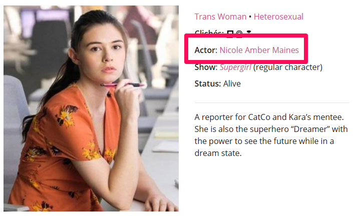

Queer Fans Deserve Data
Fandom, passion, code and the desire to see fair and positive LGBTQ representation on television
The LezWatch.TV story
Mika's Story
Tracy's Story
Daytime's first wlw kiss
BAM
Another show Tracy watched just for the gay.
September 23, 2014

Shows and Characters
What makes it worth your time?
Shows
- Are the queers real?
- Are the queers happy?
- Do the queers have screentime?
- What seasons/episodes should you watch?
Characters
- What is their gender identity?
- What is their sexual orientation?
- What actors portray them?
- What shows are they on?
The Nitty Gritty
- Tropes - What common situations/plots are found on a show?
- Clichés - What common types of characters are we seeing?
- Stations - Where can you watch this show?

2015
- Character Roles: Main, Recurring or Guest?
- Character Death Date: When did they die?
- Nations: Where did this originate from?
2016
- Show Stars: Gold, Silver or Bronze?
- Show Warnings: Is this a trigger warning?
- Airdates: When did the show air?
- IMdB ID: What's the IMdB page for the show?
- Show Formats: TV shows or web series or what?
- Show Genres: What kind of show is this?

2017
- Shows We Love: If we think everyone should watch a show, we love it
- Romantic Orientation: Optional for characters who have this
October 2017


The L Word Overload

The Orphan Black Clone Conundrum

Soap Operas

Determine which actor primarily represents the character

The Biggest Code Challenge of Them all
Sara F*cking Lance
Sara Lance
Has died and come back to life 3 major times
Sara Lance
Has been played by 2 different actors
Sara Lance
Has been on four different shows with different roles
Legends of Tomorrow - Main
Arrow - Recurring
Supergirl - Guest
The Flash - Guest
Sara Lance

Make Data Better
In 2017 We Added
Actors
Didn't the site already have actors?
Actors
- Actor Name
- Gender Identity
- Sexual Orientation
- Birth and death dates
- Social media and webpages
- IMdB and Wikipedia links

Actor Policy
When in doubt, don’t out.
Make Data Useful
As of this morning
UPDATEME Characters
UPDATEME Shows
UPDATEME Actors
Find shows you want to watch
Find characters you can relate to

Reward Good
Shows We

Shows We
- Tracy and Mika have to agree
- High quality and positive queer representation
- Plenty of screentime
- No shock-value death
Stars

Stars
A star system to rank the queerness level of a show.
Gold
Openly queer creators, majority queer characters, out queer actors and stories made for a queer female audience.
Examples: The L Word, Take My Wife and Pose.
Silver
Openly queer creators, queer characters and stories made for a queer female audience, but may have no out queer actors or also has a significant number of stories geared towards a non-queer female audience.
Examples: Queer As Folk, Steven Universe and RED.
Bronze
Openly queer creators, some queer characters and stories, made for a general audience. Also used for shows focused on a queer main character and their stories, but has no out queers involved with production or acting.
Examples: Sense8, American Horror Story and Janet King.
Intersectionality

Intersectionality
The concept that oppressive institutions (racism, sexism, homophobia, transphobia, ableism, xenophobia, classism, etc.) are interconnected and cannot be examined separately from one another.
Jane the Virgin

Show Scores

Show Scores
A mathematical method of a generating a numeric score for TV shows from 0 to 100 to help identify shows that are ‘better’ for queer audiences than others.
Show Scores
Combine the quantitative with the qualitative
- Ratings
- Character Survival Rate
- Character Score
- Show Tropes
Four subject areas
Four subject areas

Four subject areas

Four subject areas

Four subject areas

Each can earn 0 - 100 points
 0 - 100 points
0 - 100 points 0 - 100 points
0 - 100 points- 0 - 100 points
 0 - 100 points
0 - 100 points
Example with points
- 50 points
- 60 points
- 70 points
- 80 points
Add up the points
- 50 points
- 60 points
- 70 points
- 80 points
Total number of points: 260
Divide the total number by 4
- 50 points
- 60 points
- 70 points
- 80 points
260 ÷ 4 = 65
Final Score
- 50 points
- 60 points
- 70 points
- 80 points
The Final Score is 65
Ratings
- Ratings: Realness, Quality, Screentime
- Worth Watching: Thumbs up, down, meh
- Stars: Gold, Silver, Bronze
- Trigger Warnings: Low, Medium, High
- Show We Love: Yes or No
Ratings
Ratings
- Heart Ratings
- Worth Watching

Stars

- Trigger Warnings
Show we Love

Heart Ratings
- Heart Ratings
-
= 1 point
- Realness 0 - 5 Points
- Quality 0 - 5 Points
- Screentime 0 - 5 Points
Heart Ratings
- Heart Ratings
-
= 1 point
- Realness 4 Points
- Quality 4 Points
- Screentime 5 Points
= 13 Points
Heart Ratings
- Heart Ratings
-
The sum of points are
multiplied by 3.13 x 3 = 39
39 Total Points
Is it Worth Watching?
- Worth Watching
-
-
 = 10 Points
= 10 Points
-
 = 5 Points
= 5 Points
- = -10 Points
-
Stars
- Stars
-
- Gold = 20 Points
- Silver = 10 Points
- Bronze = 5 Points
Trigger Warnings
- Trigger Warnings
-
- Low -5 Points
- Medium -10 Points
- High -15 Points
Show We Love
- Show we Love
-
+40 Points!
Character Survival Rate
The percentage of queer characters who are alive.
Character Survival Rate
Character Survival Rate
0 - 100 points based on the percentage of living queer characters.
Person of Interest
There are 4 queer characters listed for this show; 1 is dead.

75% of queer characters alive = 75 Points
Character Scores
- Roles - What's the balance of guests to regulars
- Clichés - No Cliches (or just Queer IRL) is good
- Death - Dead characters are bad
- Queer Rep - Are queer characters played by queers?
- Trans Representation - Are transgender actors playing characters?
- Show Type - Expectations of web vs series
Character Scores Formula
( ( Regulars × 3 ) + Recurring + ( Guests / 2 ) ) + ( Queer IRL × 2 ) + ( Transgender IRL × 2 ) - ( Dead × 3 )
Character Scores Formula
- Movies - score / 2
- Mini Series - score / 1.5
- Web Series - score / 1.25
Character Scores
Character Scores
What factors into the character score?

What factors into the character score?
-

-
Role:
Are they a Regular, Recurring or Guest Character?
What factors into the character score?
-
Clichés:
Do they have zero clichés?
What factors into the character score?
- 
-
Queer Representation:
Is the queer character being played by an out queer actor?
What factors into the character score?
-
Transgender Representation:
If the character is transgender, are they being played by an out transgender actor?
What factors into the character score?
-

-
Death:
Are they alive or dead?
What factors into the character score?
-

-
Show Type:
Is the show the character is on a series, webseries or movie?
Calculating the character score
Anyone But Me

Calculating the character score
-

-
Roles:
- Number of Regular Characters x 5
-
+
Number of Recurring Characters x 2 -
+
Number of Guest Characters
Calculating the character score
-
-
Roles:
- Regular Characters: 2 x 5 = 10
-
+
Recurring Characters: 2 x 2 = 4 -
+
Guest Characters: 1
Calculating the character score
-
-
Roles:
- 10 + 4 + 1
- = 15
-
Total Role Score: 15
Calculating the character score
-
-
Clichés / Representation:
- Characters with zero clichés x 5
-
+
Characters played by out queer actors x 10 -
+
Transgender Characters played by out transgender actors x 10 -
+
Transgender Characters played by cis actors x -5
Calculating the character score
-
-
Clichés / Representation:
- Zero clichés: 0
-
+
Queer actors: 2 x 10 = 20 -
+
Transgender actors: NA
Calculating the character score
-
-
Clichés / Representation:
- 0 + 20
- = 20
-
Cliché / Representation Score: 20
Calculating the character score
-
-
Death:
A show loses 3 points for every dead queer character.
Calculating the character score
-
-
Death:
No one is dead
Death Score: 0
The character score formula
Role Score + Cliché/Representation Score - Death Score
The character score formula
15 + 20 - 0 = 35
Character Score: 35
The show type curve
A show's overall character score is adjusted based on the type of show it is
- Made for TV Movies: Character Score ÷ 2
- Mini Series: Character Score ÷ 1.5
- Web Series: Character Score ÷ 1.25
The show type curve
Web Series: Character Score ÷ 1.25
35 ÷ 1.25
Final Character Score: 28
Show Tropes
- None
- Good: Happy Ending, Everyone’s Queer
- Maybe: Coming Out, Big Queer Wedding
- Ploy: Erased Queerness, Happiness then Tragedy, Subtext Only, Queer For Ratings, Queer for Laughs
- Bad: Big Bad Queers, Prison, Queerbaiting, Queerbashing
- Regular: Everything else
Show Tropes Formula
( ( Good + Maybe - Ploy - Bad ) ÷ ( Good + Maybe + Ploy + Bad ) ) x 100
Show Tropes
Show Tropes
What factors into the show trope score score?
First we put our tropes into categories.
Trope Categories
- None
Zero Tropes
- Good
Happy Ending,
Everyone’s Queer
- Maybe
Coming Out, Big Queer Wedding
- Ploy
Erased Queerness, Happiness then Tragedy, Subtext Only, Queer For Ratings, Queer for Laughs
- Bad
Big Bad Queers, Prison, Queerbaiting, Queerbashing
- Regular
Everything else
Zero Tropes
Happy Ending,
Everyone’s Queer
Coming Out, Big Queer Wedding
Erased Queerness, Happiness then Tragedy, Subtext Only, Queer For Ratings, Queer for Laughs
Big Bad Queers, Prison, Queerbaiting, Queerbashing
Everything else
Calculating the trope score
None
If a show has no tropes at all.
Trope Score: 80
Calculating the trope score
All other shows go through a trope score formula.
- The Number of Good and Maybe Tropes
- - The Number of Ploy and Bad Tropes
- ÷ the total number of tropes (excluding regulars)
- x 100 = Trope Score
The trope score formula
Example: A show with happy tropes
- 2 Good and 1 Maybe = 3
- - 0 Ploy and 0 Bad = 3
- ÷ 3 Tropes total (excluding regulars) = 1
- 1 x 100 = 100
Trope Score: 100
The trope score formula
Example: Big Queer Wedding but for ratings
- 2 Good and 1 Maybe = 3
- - 1 Ploy and 0 Bad = 2
- ÷ 4 Tropes total (excluding regulars) = 0.5
- 0.5 x 100 = 50
Trope Score: 50
The trope score formula
Example: A show with bad tropes
- 2 Good and 0 Maybe = 2
- - 2 Ploy and 2 Bad = -2
- ÷ 6 Tropes total (excluding regulars) = -0.33
- -0.33 x 100 = -33.3 rounded to 0
Trope Score: 0
The Bury Your Queers Penalty
If a queer character is killed,
the show loses 1/3 of its trope score.
Bonus Points!
Intersectionality Good!
Bonus Points!
Bonus Points
Reward shows shows with Intersectionality tags.
Each tag earns 3 points, up to 15 max.
Intersectionality bonus points
-

-
2 tags = 6 points
Example: The L Word
Show Score: 73.32
- Ratings
- Character Survival Rate
- Character Score
- Show Tropes
Example: The L Word
Ratings: 47
- Gold = 20 Points
-
= 5 Points
-
Realness
-
Quality
-
Screentime
Example: The L Word
Character Survival Rate: 96.7
There are 62 queer characters listed for this show; 2 are dead.
Example: The L Word
Character Score: 100
Example: The L Word
Show Tropes Score: 49.5
Example: The L Word
( 47 + 96.7 + 100 + 49.5 ) ÷ 4 = 73.3
Example: The L Word
Statistics
Sexual Orientation
Gender Orientation
Actor Orientation
Stations
Countries
Death
The State of Representation
US Network TV
As of May 2018
Sexual Orientation Representation
Gender Orientation Representation
Analysis Results
- Best On-Air Score: The CW 36.66 (CBS 35.4 is second )
- Best Overall Score: ABC 33.96 (The CW 33.28 is second)
- Most Shows On-Air: FOX 16 (ABC 15 is right behind )
- Most Shows Total: ABC 69 (NBC 64 is catching up)
Overall
Scores and total shows on-air are going up.
Is It Getting Better?
Shows by Year
Turnover

US Television
Blue line = Gains, Orange Line = Losses

The Future of Representation
Black Lightning
First black lesbian superhero main character.
Steven Universe
First same sex female proposal and wedding on a children's show.
Vida
A show featuring Latinx queer women, created, written and produced by Latinx queer women.
Pose
A show about transgender women of color with the highest number of out transgender and queer actors, writers and producers.
Supergirl
First transgender superhero. The role will be played by out transgender actress Nicole Maines.
Batwoman
The first titular superhero main character to helm a show, and be openly queer from day one as character and actor.
The Future of LezWatch.TV
Alexa Skill

WordPress Plugin